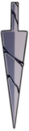

Hollow Knight: Guía de amuletos, hechizos, habilidades y aguijón

Aguijón
El aguijón es el arma principal del Caballero y su medio de defensa más básico. Con el aguijón, el Caballero puede atacar a los enemigos en cuatro direcciones y rebotar sobre obstáculos como espinas o proyectiles. El aguijón se puede mejorar hasta tres veces hablando con el Forjaguijones, un insecto herrero que vive en la Ciudad de las Lágrimas. Al mejorar el aguijón, se aumenta su daño y su alcance. Además, el Caballero podrá aprender las Artes del aguijón, que son ataques especiales que consumen ALMA y que tienen diferentes efectos según la dirección en la que se realicen.
Amuletos
Los amuletos son objetos especiales que se encuentran escondidos en diferentes lugares de Hallownest o que se pueden comprar a algunos insectos comerciantes. Estos objetos otorgan al jugador diversas mejoras y habilidades que le ayudan en su aventura. Para poder usarlos, el jugador debe tener muescas libres en su caparazón, que se pueden obtener al explorar el mundo o al pagar a una bruja. Los amuletos se pueden equipar y desequipar en los bancos, y algunos de ellos tienen efectos especiales al combinarse entre sí.
Hechisos
Los hechizos son ataques mágicos que el jugador puede usar para infligir un gran daño a sus enemigos en un corto periodo de tiempo. Estos ataques consumen ALMA, que se puede obtener al golpear a los enemigos con el aguijón o al usar ciertos amuletos. A lo largo de la aventura, el jugador podrá encontrar y mejorar diferentes hechizos que le darán más opciones de combate y exploración. Algunos hechizos también tienen efectos secundarios, como recuperar vida o crear escudos.
Habilidades
Las habilidades son objetos y poderes que el jugador podrá obtener al explorar Hallownest y derrotar a algunos de sus enemigos más poderosos. Estas habilidades le permitirán al jugador superar obstáculos que antes le impedían avanzar y navegar más fácilmente por el vasto mundo. Algunas habilidades son esenciales para completar el juego, mientras que otras son opcionales pero muy útiles. Las habilidades se pueden mejorar con amuletos o con otros objetos especiales.